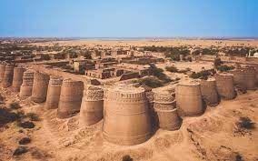
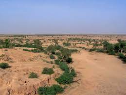
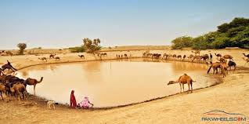

The Cholistan Desert also locally known as Rohi is a desert in the southern part of Punjab, Pakistan that forms part of the Greater Thar Desert, which extends to Sindh province and the Indian state of Rajasthan. It is one of two large deserts in Punjab, the other being the Thal Desert. The name is derived from the Turkic word chol, meaning "sands," and istan, a Persian suffix meaning "land of." Cholistan was a center for caravan trade, leading to the construction of numerous forts in the medieval period to protect trade routes - of which the Derawar Fort is the best-preserved example.Cholistan covers an area of 25,800 km2 (10,000 sq mi) in the Bahawalpur, Bahawalnagar, and Rahim Yar Khan districts of southern Punjab. The nearest major city is Bahawalpur city, 30 km (19 mi) from the edge of the desert. The desert stretches about 480 kilometres in length, with a width varying between 32 and 192 kilometres.
 ;  